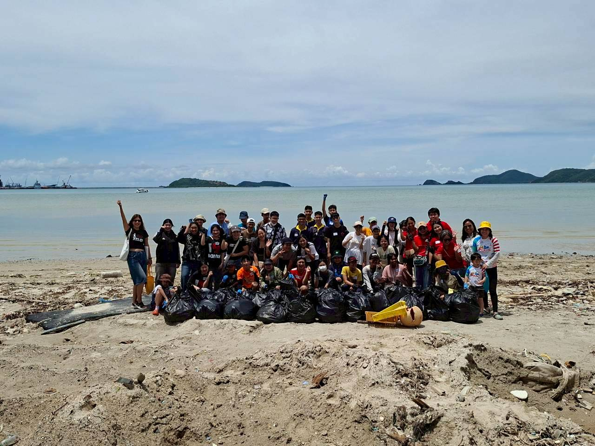
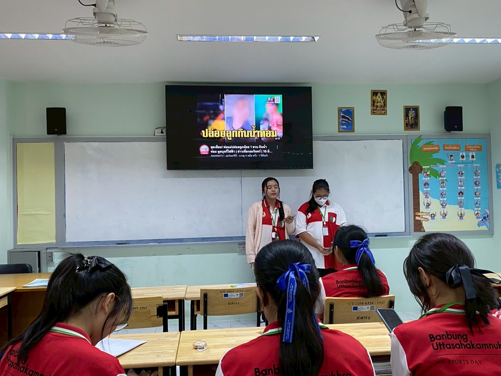

ความสามารถพิเศษ
🏆 กิจกรรมและหลักฐานที่แสดงถึงทักษะ
🌊 กิจกรรมเก็บขยะริมหาดในงาน Say Hi น้องเต่า ครั้งที่ 45

รายละเอียดกิจกรรม: เข้าร่วมกิจกรรมเก็บขยะบริเวณริมชายหาด เพื่อช่วยดูแลรักษาความสะอาดของพื้นที่และสิ่งแวดล้อม
ความสอดคล้องกับทักษะ: กิจกรรมนี้สะท้อนถึงความมีจิตสาธารณะ ความเสียสละ และความรับผิดชอบต่อส่วนรวม รวมถึงการตระหนักถึงความสำคัญของสิ่งแวดล้อม
📚 จิตอาสาในงานมหกรรมวิชาการ “ทักษะสร้างสุข วิชาการสร้างงาน เปิดบ้านสู่ EEC”

รายละเอียดกิจกรรม: เข้าร่วมเป็นจิตอาสาในการดำเนินงานมหกรรมวิชาการ โดยช่วยสนับสนุนและอำนวยความสะดวกภายในงาน
ความสอดคล้องกับทักษะ: กิจกรรมนี้แสดงถึงความเสียสละ ความรับผิดชอบ และความเต็มใจในการช่วยเหลืองานส่วนรวม อีกทั้งยังได้เรียนรู้การทำงานร่วมกับผู้อื่น เพื่อให้งานดำเนินไปอย่างเรียบร้อย
🚒 อบรมเชิงปฏิบัติการเสริมสร้างความปลอดภัยในสถานศึกษา

รายละเอียดกิจกรรม: เข้าร่วมการอบรมเชิงปฏิบัติการเกี่ยวกับการเสริมสร้าง ความปลอดภัยในสถานศึกษา และการรับมือกับสถานการณ์ฉุกเฉิน
ความสอดคล้องกับทักษะ: กิจกรรมนี้ช่วยพัฒนาความรู้เกี่ยวกับการรับมือ สถานการณ์ฉุกเฉิน การสังเกตและประเมินสถานการณ์ รวมถึงการช่วยเหลือผู้อื่นอย่างเหมาะสมและปลอดภัย
🩺 การใช้หูฟังแพทย์ใน “โครงการเปิดบ้านแพทย์บูรพา ประจำปีการศึกษา 2568”

รายละเอียดกิจกรรม: เข้าร่วมกิจกรรมการเรียนรู้เกี่ยวกับการใช้หูฟังแพทย์ และการตรวจเบื้องต้นภายใต้โครงการเปิดบ้านแพทย์บูรพา
ความสอดคล้องกับทักษะ: กิจกรรมนี้ช่วยให้ได้เรียนรู้ทักษะพื้นฐานทางการแพทย์ ฝึกการสังเกตและการตรวจเบื้องต้น รวมถึงสร้างความเข้าใจเกี่ยวกับการทำงานของบุคลากรทางการแพทย์
🧬 การผ่า Gross Anatomy ใน “โครงการเปิดบ้านแพทย์บูรพา ประจำปีการศึกษา 2568”

รายละเอียดกิจกรรม: เข้าร่วมกิจกรรมการเรียนรู้ด้านกายวิภาคศาสตร์ โดยทำกิจกรรมร่วมกับผู้เข้าร่วมคนอื่น ๆ ภายใต้โครงการเปิดบ้านแพทย์บูรพา
ความสอดคล้องกับทักษะ: กิจกรรมนี้ช่วยฝึกการสื่อสาร การแลกเปลี่ยนความคิดเห็น และการทำงานร่วมกับผู้อื่น โดยต้องอาศัยความร่วมมือและความรับผิดชอบร่วมกัน
🙏 การอบรมคุณธรรมจริยธรรมนักเรียน

รายละเอียดกิจกรรม: เข้าร่วมการอบรมคุณธรรมและจริยธรรม เพื่อพัฒนาความรับผิดชอบ การเคารพผู้อื่น และการอยู่ร่วมกันในสังคม
ความสอดคล้องกับทักษะ: กิจกรรมนี้ส่งเสริมการรับฟังความคิดเห็นของผู้อื่น การเคารพความแตกต่าง และการอยู่ร่วมกับผู้อื่นอย่างเหมาะสม ซึ่งเป็นพื้นฐานสำคัญของการทำงานเป็นทีม
📢 ประชาสัมพันธ์ข่าวเกี่ยวกับโทษของยาเสพติด ในวันต่อต้านยาเสพติด

รายละเอียดกิจกรรม: มีส่วนร่วมในการประชาสัมพันธ์ข้อมูลเกี่ยวกับโทษ และผลกระทบของยาเสพติด เนื่องในวันต่อต้านยาเสพติด เพื่อสร้างความรู้และความตระหนักให้แก่ผู้อื่น
ความสอดคล้องกับทักษะ: กิจกรรมนี้สะท้อนถึงความกล้าแสดงออก ความรับผิดชอบ และความสามารถในการสื่อสารข้อมูล ให้ผู้อื่นเข้าใจ รวมถึงการริเริ่มและรับผิดชอบหน้าที่ ซึ่งเป็นองค์ประกอบสำคัญของความเป็นผู้นำ